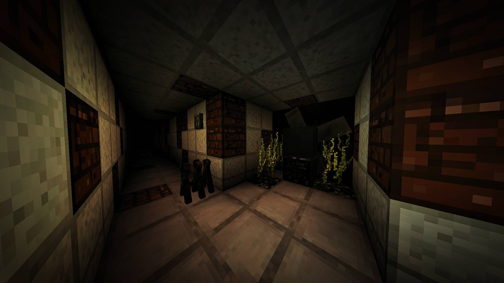
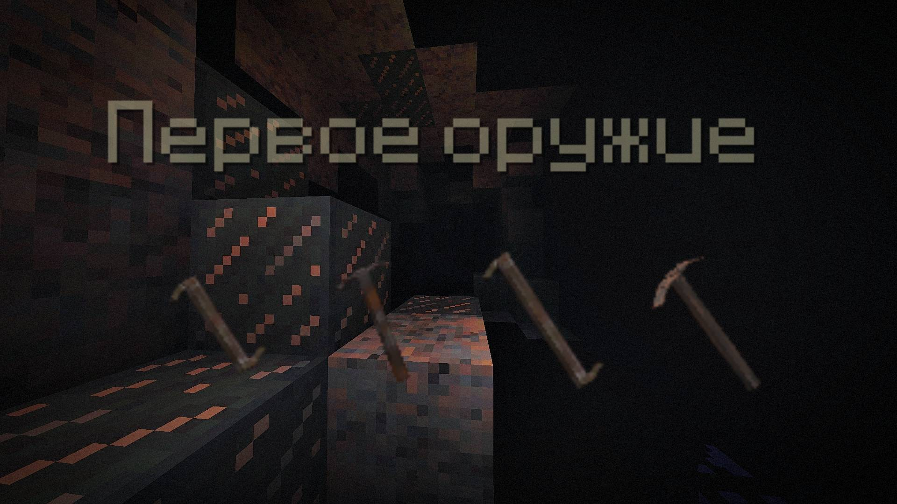
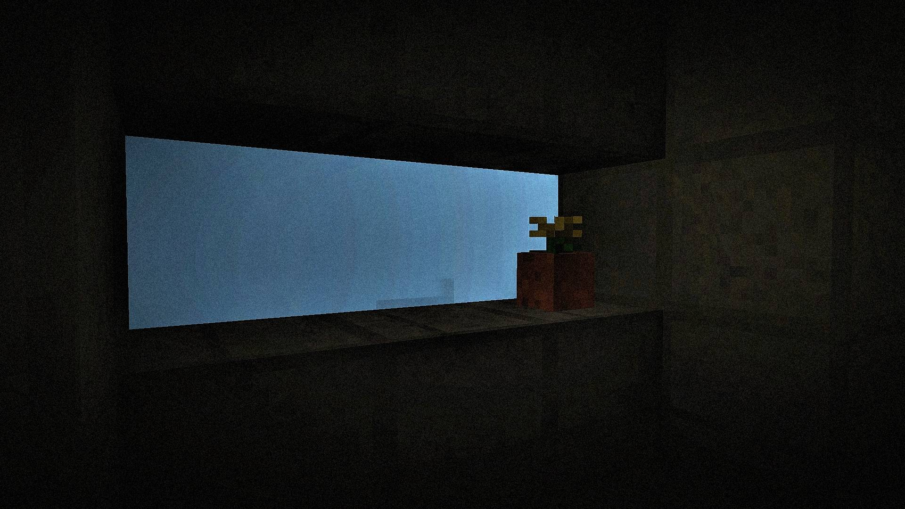
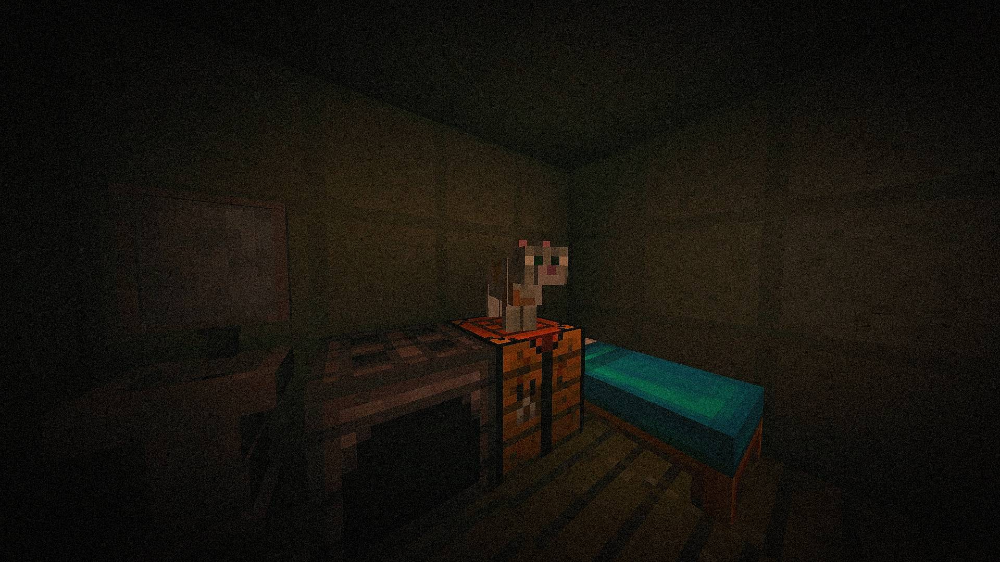

-Основы-
Ржавый потолок, тусклый свет аварийной лампы, гул вентиляции, которая работает уже много лет. Последнее, что всплывает в памяти, яркая вспышка, шипение газа и чей-то крик. Всё остальное стерто. Добро пожаловать в место , где всё окружено секторами. Жилой сектор - последнее убежище человечества. Вы один из выживших. Вы не помните своего имени, лиц и не вспомните, каким был мир до катастрофы. Но вы знаете главное: здесь выживаешь либо ты, либо холод и чума забирает тебя.
-Как устроен этот мир?-
Вы живёте в Секторах - изолированных отсеках, соединённых опасными тоннелями. Связь между секторами слабая, и доверять соседям нельзя, ресурсов мало, и каждый сам за себя. · Верхние сектора. Там теплее, но воздух заражён, вода токсична. · Средние сектора самая обитаемая зона. Именно там просыпаются новички. Здесь более-менее чисто, но запасы еды и топлива заканчиваются. · Нижние сектора холод и вечный мрак. Температура опускается до смертельной за несколько минут. Вода там чистая, но добыть её стоит огромных усилий.
-Водоснабжение-
Водоснобжение лишь на один этаж. Если насос остановиться, вода станет неочищенной. Из-за неё можно получить сильное отравление.Починить насос просто: для этого нужно прикрутить гайки ключом. Ключ можно найти в трубах, там их иногда роняют или прячут, они лежат под слоем ржавчины. Раз в неделю стоит смотреть все соединения и подтягивать.

-Крафт и оружие-
Тут не всё так просто, как в других местах. Для этого не хватит знаний о том , как собрать железный меч. Крафт требует знаний, и это главное, что необходимо понимать. Даже если представить полный ящик металла, кожи и проволоки, нормальное оружие без инструкции не собрать. Инструкция - не бумажка для красоты, а знание, без которого использование базовых вещей ни к чему не приведёт

-Лампы-
Многие думают, что лампы для красоты, но это не так. Более умные сущности поняли, что в темноте люди более уязвимы, и начали пользоваться этим. В переходе неделю мигала одна лампа. Все видели, никто не пошёл. Теперь в переходе никого нет.

-Вентиляция-
На неё обычно не обращают внимание, пока не станет поздно. Вентиляцию надо чистить, руками, скребком, чем угодно. Если не чистить, плесень прорастёт на этаже. Большинство людей ушли наверх и не вернулись. Насос со временем приходит в негодность, приходится подтягивать гайки, но он всё равно воет. Может, это нормально. А может, что-то происходит... Со временем - этот мир давит своими стенами, руки трясутся... Нужно продолжать свою работу, иначе всё это отсановиться. Это не сложно. Просто скучно. Но если ты этого не сделаешь, ты обречёшь себя и своих соседей на смерть. Не от тварей в темноте, не от холода и радиации.
